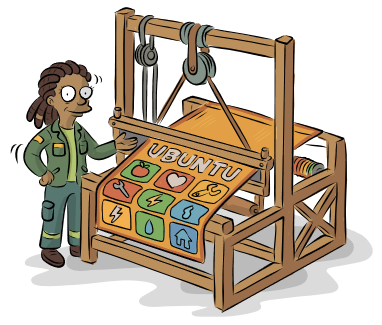

It's the infrastructure. Mutual aid your community already runs, with tools that don't fall apart the day one person burns out. Built by the people who live it, not for them.
When the economy cracks, or the water stops, or the power goes, the people with the least get hit first. We don't know which shock is next. We do know who it lands on. South Africa has already had its rehearsals: the Cape Town water crisis, lockdown, July 2021, the KZN floods, years of load shedding. Each time, the poorest neighbourhoods carried the most.
Mutual aid already happens here. Your neighbour knows when you're struggling before any NGO does. What's missing is the infrastructure that's in place, and in use, before the bad day. Resilience can't be built in the middle of a crisis.
An app that doesn't wait for permission. Your Resident Association or CPF already has your trust. We plug into that, not around it. A Cell Steward who's actually your neighbour. A profile that starts with what you can give, not what you're short of.
We train people to run this. Not consultants who fly in and leave. Visual Storytellers, Network Weavers and innovation facilitators. Real skills, run by people who live three streets over, not head office.
The NPC's being registered right now. The platform isn't a pitch anymore. It works: real listings, real support offerings, tested end to end. What it hasn't done yet is meet a real community. Delft's first. Piket Bo-Berg's next. We're doing this in the open on purpose. Say yes now, and you're shaping it, not signing off on something already decided.
See what a Node is and how one begins. Your structure stays yours.
Three tracks. Funded training, not a job promise.
Got a real initiative and no way into a community? We're people who live there.
Back something built from the ground up. We'll tell you where we really are.